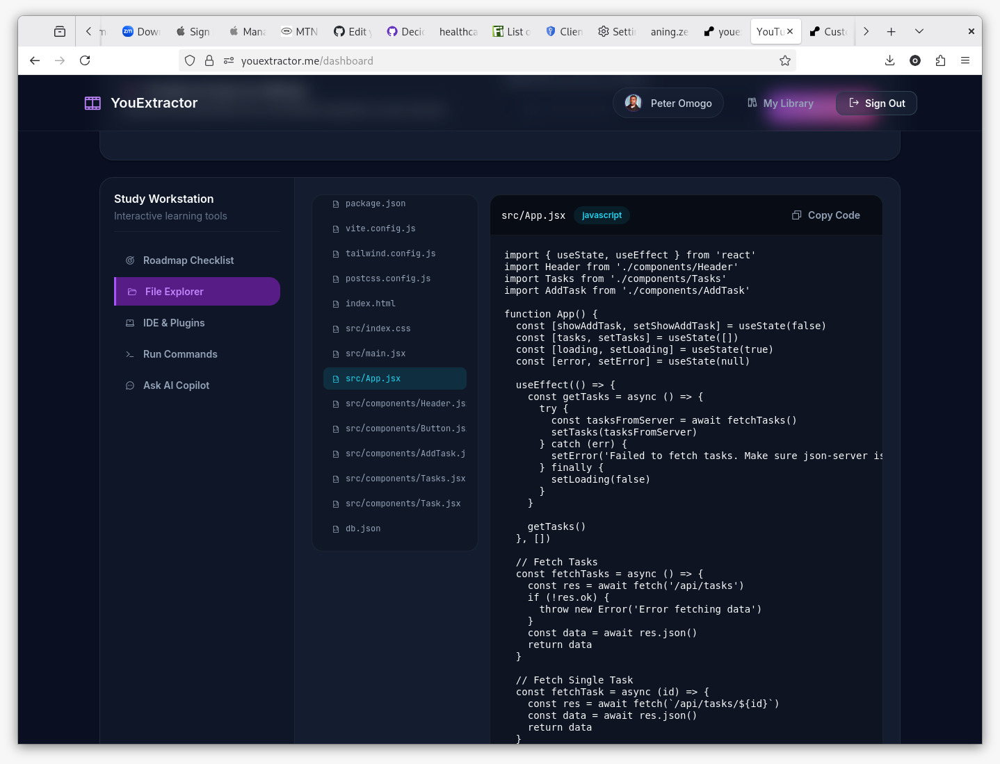

AI DevOps & Code Extraction
YouExtractor
SaaS Platform Extracting Syntax-Highlighted Codebases from YouTube Video Tutorials.

Project Overview
YouExtractor is an innovative, developer-focused SaaS platform designed to bridge the gap between visual programming tutorials and active coding practice. By parsing YouTube video links and extracting their transcripts, the system orchestrates a chained LLM pipeline using Claude and Gemini to rebuild complete, functional codebases directly from the video context.
Instead of manually copy-pasting code from video screens or looking for missing GitHub repositories, users can input any programming tutorial link and receive a fully functional workspace containing configuration files, code directories, package files, and database seeds. It also offers a context-aware AI chat copilot to answer project-specific development questions and helps export code repositories directly to GitHub.
Technical Highlights
- ▹Chained LLM Pipelines: Multi-model orchestration utilizing Claude 3.5 Sonnet and Google Gemini Flash with automatic fallback handling.
- ▹Interactive Code Explorer: Web-based file browser with full syntax highlighting (via Highlight.js) and folder structures.
- ▹GitHub DevOps Integration: OAuth integrations for users to automatically deploy extracted code directly into a new repository on their GitHub accounts.
- ▹Scalable Job Queue: Background processing of transcripts, AI prompts, and parsing using Laravel Queue workers.
Core Technologies
Built using standard enterprise design patterns to guarantee reliable AI outputs and seamless API communication.